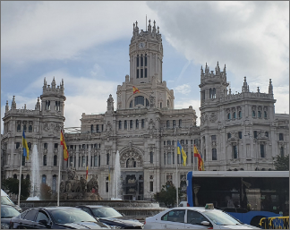

|  | 스페인 | 시벨 광장에 있는 건물들 중 가장 눈에 띄는 것은 코뮈니카시오네 궁전입니다. 이 대성당 같은 랜드마크는 1909년 안토니오 팔라시오스가 우편 서비스의 본부로 지었습니다. 이 인상적인 건물은 2007년 이 랜드마크 건물이 마드리드의 공식 시청(아윤타미엔토 데 마드리드)이 되기 전까지 우편 및 전신 박물관의 본거지였습니다. | |
|---|---|---|---|
| 유럽여행 | 마드리드 | 여행추천 | 시벨레스 분수 Fuente de la Cibeles, Madrid 푸엔테 데 라 시벨레스 그 중심에는 푸엔테 데 라 시벨레스가 있습니다. 자연의 여신 시벨레(또는 세레스)의 이름을 딴 이 분수는 마드리드의 가장 중요한 상징 중 하나로 여겨집니다. 시벨레스 분수는 두 마리의 사자가 끄는 전차를 탄 여신을 묘사하고 있습니다. 분수는 벤추라 로드리게스에 의해 1777년에서 1782년 사이에 지어졌습니다. 지역 축구팀 레알 마드리드가 우승컵을 차지할 때마다 팬들은 분수 주위로 몰려들어 축하합니다. |
| 여행시간 | 3시간 | 여행일자 | 2022. 12. 07 |